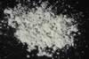

|
DOCUMENTATION_FORMAT: MINERAL
SAMPLE_ID: GDS108
MINERAL_TYPE: Phyllosilicate
MINERAL: Muscovite (Mica group)
FORMULA: KAl2Si3O10(OH)2
FORMULA_HTML: KAl2Si3O10(OH)2
COLLECTION_LOCALITY: Methulu, Ontario
ORIGINAL_DONOR: Jim Crowley, USGS Reston
CURRENT_SAMPLE_LOCATION: USGS Denver Spectroscopy Laboratory
ULTIMATE_SAMPLE_LOCATION: USGS Denver Spectroscopy Laboratory
SAMPLE_DESCRIPTION:
IMAGE_OF_SAMPLE:

END_SAMPLE_DESCRIPTION.
XRD_ANALYSIS:
"The unit-cell parameters for this muscovite, determined by Robert Fournier, U.S. Geological Survey, are a=5.203± 0.005 Angstroms, b=9.003± 0.01 Angstroms, c=20.031±0.001 Angstroms, beta=94.47°±0.17°, using fluorite, a=5.4626 Angstrom, as an internal standard."
Robie, R.A., Hemingway, B.S., and Wilson, W.H., 1976, The heat capacities of calorimetry conference copper and of muscovite KAl2(AlSi3)O10(OH)2, pyrophyllite Al2Si4O10(OH)2, and illite K3(Al7Mg)(Si14Al2)O40(OH)8 between 15 and 375 K and their standard entropies at 298.15K. U.S. Geological Survey Journal of Research, v. 4, no. 6, p.631-644.
END_XRD_ANALYSIS.
COMPOSITIONAL_ANALYSIS_TYPE: # XRF, EPMA, ICP(Trace), WChem
| COMPOSITION KEYWORD |
Oxide ASCII |
Amount | Weight Percent, % |
Oxide html |
|---|---|---|---|---|
| COMPOSITION: | SiO2 | 44.0 | wt% | SiO2 |
| COMPOSITION: | TiO2 | .13 | wt% | TiO2 |
| COMPOSITION: | Al2O3 | 35.0 | wt% | Al2O3 |
| COMPOSITION: | Fe2O3 | 2.2 | wt% | Fe2O3 |
| COMPOSITION: | FeO | .26 | wt% | FeO |
| COMPOSITION: | MnO | .07 | wt% | MnO |
| COMPOSITION: | MgO | .57 | wt% | MgO |
| COMPOSITION: | CaO | .22 | wt% | CaO |
| COMPOSITION: | Na2O | .72 | wt% | Na2O |
| COMPOSITION: | K2O | 9.6 | wt% | K2O |
| COMPOSITION: | P2O5 | .01 | wt% | P2O5 |
| COMPOSITION: | F | .29 | wt% | F |
| COMPOSITION: | CO2 | .01 | wt% | CO2 |
| COMPOSITION: | H2O+ | 5.6 | wt% | H2O+ |
| COMPOSITION: | H2O- | 2.0 | wt% | H2O- |
| COMPOSITION: | Total | 100.68 | wt% |
Rapid rock analysis from:
Robie, R.A., Hemingway, B.S., and Wilson, W.H., 1976, The heat capacities of calorimetry conference copper and of muscovite KAl2(AlSi3)O10(OH)2, pyrophyllite Al2Si4O10(OH)2, and illite K3(Al7Mg)(Si14Al2)O40(OH)8 between 15 and 375 K and their standard entropies at 298.15K. U.S. Geological Survey Journal of Research, v. 4, no. 6, p.631-644.
COMPOSITION_TRACE:
COMPOSITION_DISCUSSION:
END_COMPOSITION_DISCUSSION.
MICROSCOPIC_EXAMINATION:
END_MICROSCOPIC_EXAMINATION.
SPECTROSCOPIC_DISCUSSION:
Spectrum resembles a normal muscovite. G. Swayze
END_SPECTROSCOPIC_DISCUSSION.
SPECTRAL_PURITY: 1b2b3b4_ # GDS108 # 1= 0.2-3, 2= 1.5-6, 3= 6-25, 4= 20-150 microns
{kind=link}